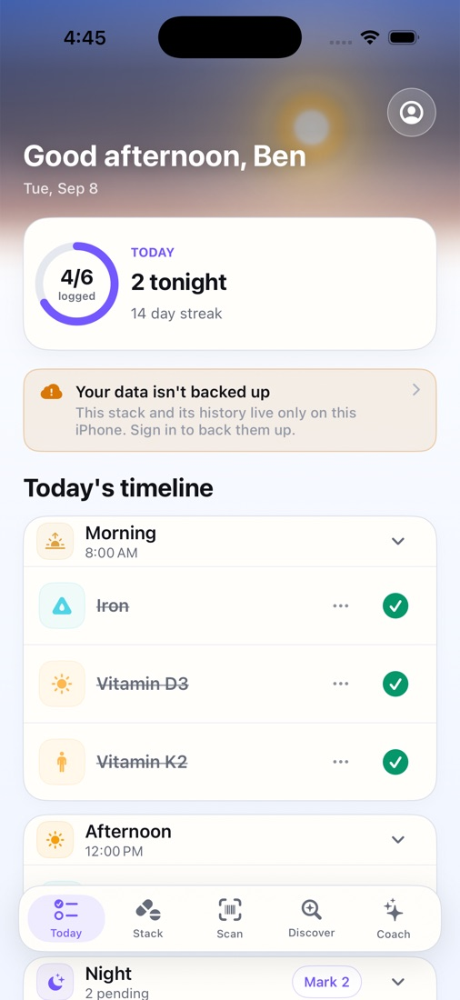
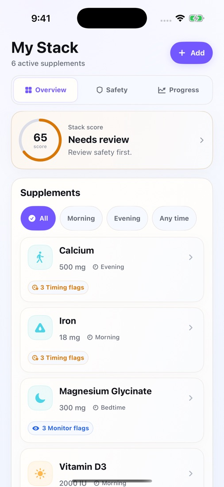
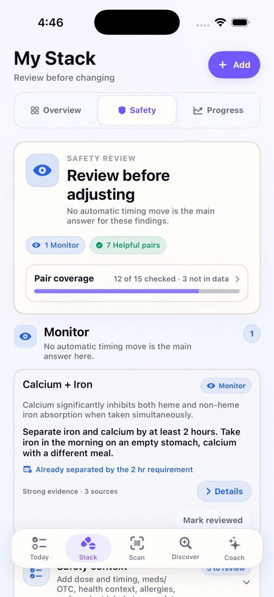
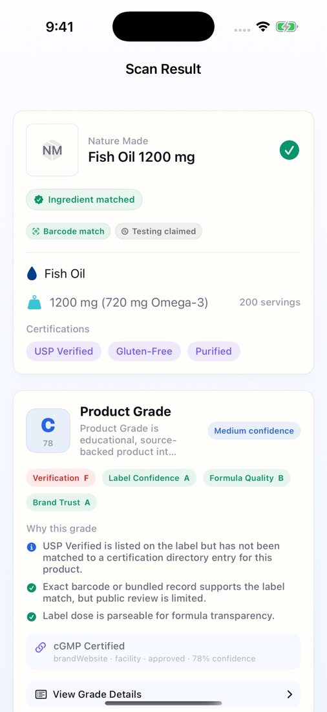
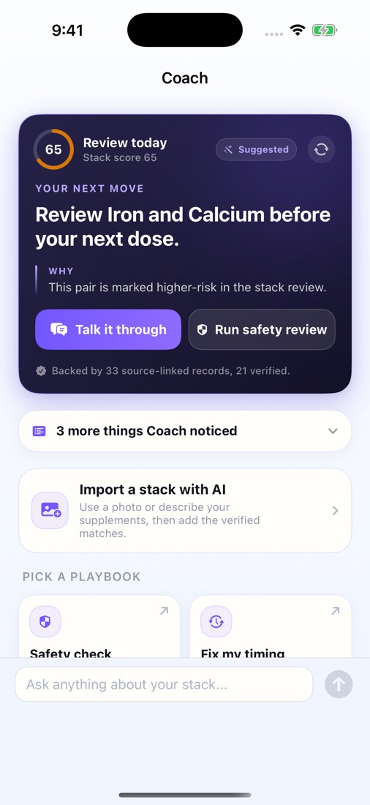
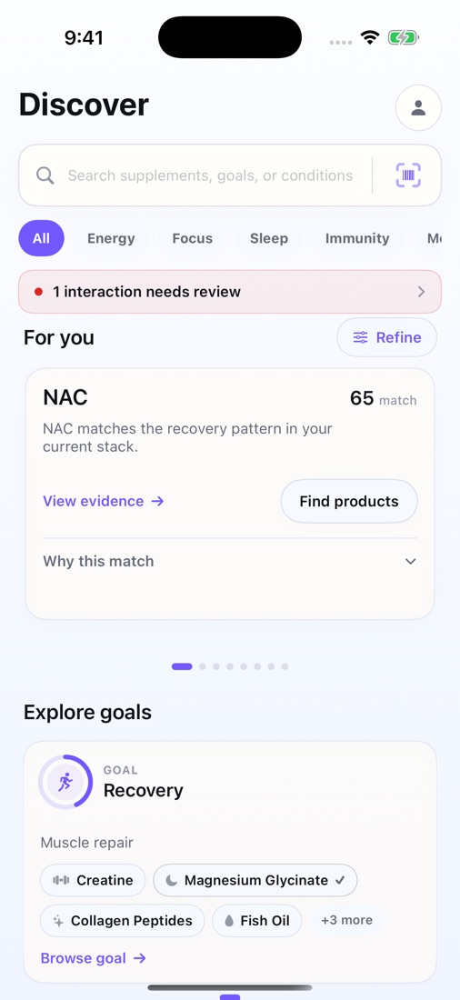
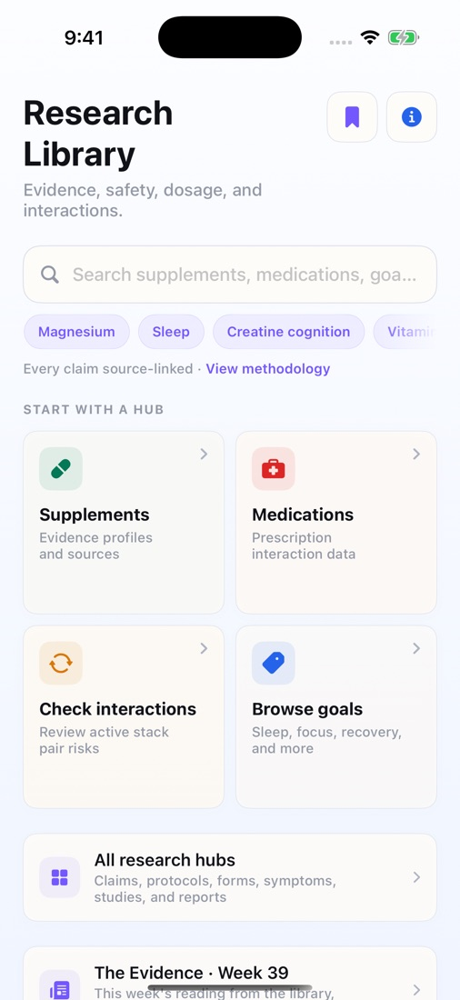

A supplement tracker that checks your whole stack for dangerous combinations.
I designed, built and shipped NutriStack on my own. You add everything you take, and it screens the full stack for supplement and prescription interactions, schedules when to take each item, and tracks whether it’s helping. You can scan a bottle’s barcode or label to grade the product and see how it would change your stack. Its claims are backed by PubMed and DOI citations. The same knowledge base powers nutristackapp.com, a public research site with 1,142 indexed pages that brings in new users from search.
2,544interactions mapped
298prescription drugs covered
2,015studies cited
642unit tests on ~119K lines of Swift







Today: every dose on a timeline, grouped by time of day, with a daily ring and streak.